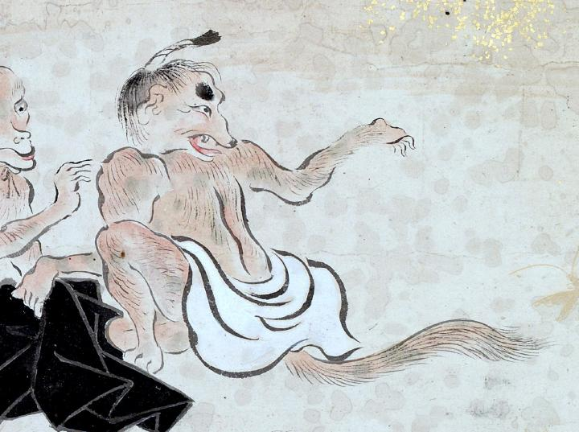

白い腰巻をした獣のような化物。黄色の体は毛で覆われている。腰巻きの下から長い尻尾が出ている。髷を結っている。
著作者：吉光／出典：親書誌：U426_nichibunken_0057：百鬼ノ図；ヒャッキノズ／日付：2006／資源識別子：U426_nichibunken_0057_0003_0003
Copyright (c)2010- International Research Center for Japanese Studies, Kyoto, Japan. All rights reserved.